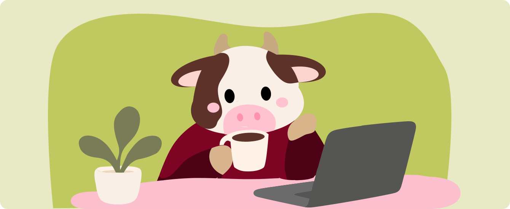
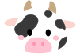
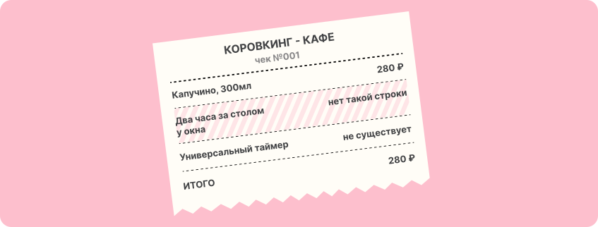
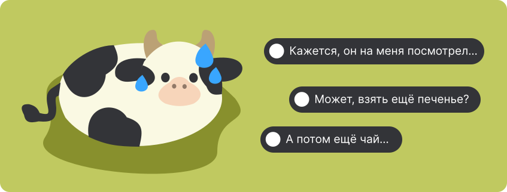

Редакция коровкинга
Что мы покупаем в кафе вместе с напитком — и как работать за столиком, не чувствуя себя слишком лишним.


Что мы покупаем в кафе вместе с напитком и как работать за столиком, не чувствуя себя лишним.
Ты нашёл столик у розетки, заказал капучино и открыл ноутбук. Первые полчаса ушли на задачу, ещё двадцать минут — на переписку. Работа пошла, но кофе закончился. Бариста проходит мимо, у входа появляются новые посетители, и ты начинаешь сомневаться: пора заказать ещё или пора уходить?
В библиотеку приходят учиться, в коворкинг — работать. В кафе всё сложнее: кто-то завтракает, кто-то встречается с друзьями, а кто-то третий час собирает презентацию. Один и тот же столик нужен всем для разного:
Покупка напитка не определяет длительность пребывания. В чеке указан объём и стоимость, но нет строки «два часа за столом у окна».

Универсального таймера не существует. Маленькая кофейня и просторное кафе могут по-разному относиться к людям с ноутбуками, а ситуация в заведении будет отличаться утром буднего дня от обеденного часа пик. Поэтому полезнее понимать правила конкретного места, чем искать точное количество минут.
Когда правила неизвестны, мы начинаем угадывать их по чужим взглядам. Любое движение сотрудника можно принять за намёк: «Ты здесь засиделся».

К этому добавляется ощущение, что право оставаться нужно постоянно подтверждать заказами: допил кофе — купи печенье, съел печенье — возьми чай. В результате поход поработать превращается в попытку заглушить неловкость покупками.
Лучший способ перестать
гадать — спросить.
Уточнить правила удобнее при заказе. Достаточно спросить:
«Привет! Можно у вас пару часов поработать с ноутбуком? Есть какие-нибудь ограничения?»
Так сотруднику будет проще подсказать подходящий столик, предупредить о брони или объяснить, что по выходным здесь просят обходиться без ноутбуков. Если планируешь задержаться, лучше сразу назвать примерное время. Ответ может быть любым: можно без ограничений, можно до определённого часа или только в отдельной зоне. Узнать это до того, как ты разложил технику, гораздо приятнее.
Спроси, можно ли поработать с ноутбуком и есть ли в заведении ограничения по времени.
В часы пик свободный столик может быть важнее розетки.
Для долгой работы ищи кафе с рабочей зоной или коворкинг.
Столько, сколько позволяют правила кафе и текущая ситуация. Уточни условия, выбери подходящий столик, замечай людей вокруг и спрашивай, если появились сомнения. Короткий разговор помогает совместить твои планы с планами кафе лучше, чем молчаливые догадки. А если хочешь работать долго и не думать о чашках кофе, выбирай места, где работа — привычная часть жизни пространства.
Понравилось? Расскажите друзьям, муу.